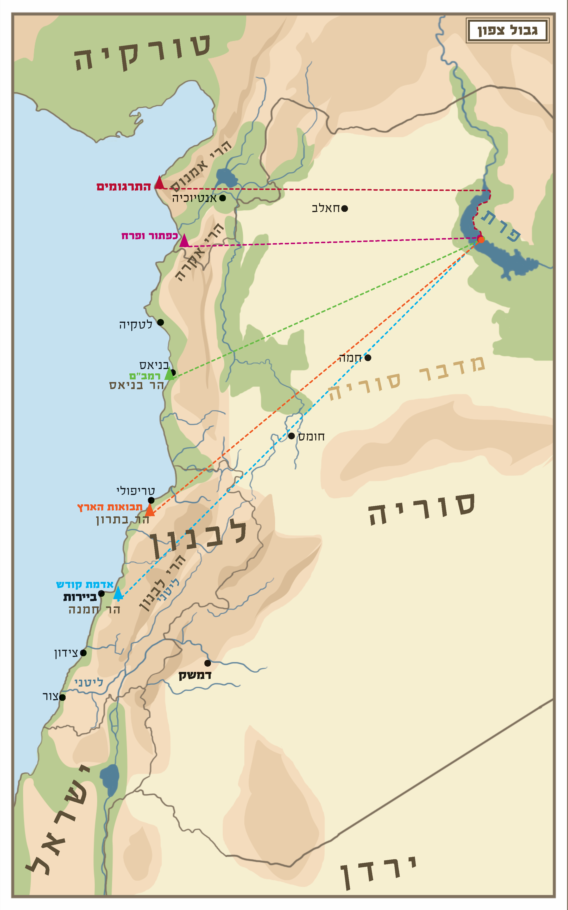

מצוות ישוב הארץ מורכבת משני חלקים: מצווה כללית ומצווה פרטית. המצווה הכללית מוטלת על כלל ישראל, ועניינה: כיבוש הארץ ויישובה על ידי עם ישראל. המצווה הפרטית מחייבת כל יחיד ויחיד מישראל לגור בארץ ולהשתתף בישובה. תחילה נעסוק בחלק הראשון, היינו במצווה המוטלת על כלל האומה, לכבוש את הארץ, לשלוט בה ולהתיישב בה. וכך כתב הרמב"ן (השמטות לספר המצוות מצווה ד): "נצטווינו לרשת את הארץ אשר נתן הא-ל יתעלה לאבותינו לאברהם ליצחק וליעקב, ולא נעזבנה ביד זולתנו מן האומות או לשממה, וזהו שנאמר (במדבר לג, נג-נד): וְהוֹרַשְׁתֶּם אֶת הָאָרֶץ וִישַׁבְתֶּם בָּהּ כִּי לָכֶם נָתַתִּי אֶת הָאָרֶץ לָרֶשֶׁת אֹתָהּ. וְהִתְנַחַלְתֶּם אֶת הָאָרֶץ..."
כשנדייק בדבריו נמצא, שישנם שני צדדים במצווה הכללית של ישוב הארץ. האחד שהארץ תהיה תחת שלטון ישראל ולא תחת שלטון זר. אולם בכיבוש הארץ המצווה עדיין לא נשלמת, וצריך להוסיף את הצד השני, שהוא ליישב את כל הארץ בפועל, באופן שלא תישאר שממה. וברור שאין די בהתיישבות עירונית ובבניית בתים בלבד, הואיל וכך יישארו בארץ חלקים שוממים, אלא המצווה היא להפריח את כל שיממות הארץ, באופן שברכתם של המקומות תתגלה באופן המיטבי.
הדגיש הרמב"ן שמצווה זו נוהגת בכל הדורות, שבכל הדורות מצווים ישראל לרשת את הארץ וליישבה ולא רק בעת כיבוש הארץ אחר יציאת מצרים. אלא שבמשך דורות רבים היינו במצב של אונס, כי היינו בגלות, בגופנו ובנפשנו, ולא יכולנו לקיים את המצווה. בחסדי ה', בדורות האחרונים, החל ה' להצמיח את ישועתנו, ומצבנו השתנה ואנו יכולים לקיים את המצווה.
מדרגות מדרגות ישנן בשותפות של כל יחיד ויחיד במצוות ישוב הארץ הכללית. כל יהודי שגר בארץ ישראל שותף במצוות ישוב הארץ, שעל ידי ישיבתו, אחיזתו של עם ישראל בארצו מתחזקת. ומי שהולך לגור במקומות שוממים יחסית, כנגב וכערבה, יש לו חלק גדול יותר במצוות ישוב הארץ, שעל ידי ישיבתו הארץ מתיישבת ואינה נעזבת לשממה. וכן המתיישב באזורים שהאזרחים הערבים מאיימים בהם על הריבונות הישראלית, כמו למשל בגליל, יש לו חלק גדול יותר במצווה.
והמתיישב ביהודה ושומרון, מקיים בישיבתו מצווה גדולה יותר, מפני שבישיבתו יש תרומה כפולה: ראשית, בהגברת שלטון ישראל במקומות שהערבים רוצים לגזול מאתנו. שנית, למען הפרחת השממה. וככל שמדובר בישוב הנמצא במקום שומם יותר מיהודים, ושונאינו מתאמצים יותר לכובשו, כך המצווה של הגרים בו גדולה יותר. וכבר אמרו חכמים (ברכות ה, א): ארץ ישראל נקנית בייסורים, ולפי גודל הצער גודל השכר (אבות ה, כג).
מעבר לכך, למדנו שמצוות ישוב הארץ צריכה להתקיים בהדרגה (להלן יג), והמקומות המקודשים ביותר קודמים, ויהודה ושומרון הם המקודשים ביותר, שבהם התגלו הנבואות לאבות ולנביאים, ובהם שכן משכן שילה ובית המקדש שבירושלים, ולכן בהם התאמצו להיאחז תחילה עולי בבל. כיוצא בזה, כאשר נגלה ה' אל יעקב אבינו בבית אל הסמוכה לירושלים, אמר לו (בראשית כח, יג-יד): "הָאָרֶץ אֲשֶׁר אַתָּה שֹׁכֵב עָלֶיהָ לְךָ אֶתְּנֶנָּה וּלְזַרְעֶךָ... וּפָרַצְתָּ יָמָּה וָקֵדְמָה וְצָפֹנָה וָנֶגְבָּה וְנִבְרֲכוּ בְךָ כָּל מִשְׁפְּחֹת הָאֲדָמָה וּבְזַרְעֶךָ". הרי שממרכז הארץ צריך להתפשט למרחבי הארץ.
מיוחדת במינה מצוות ישוב הארץ, שבעצם זה שיהודי מתגורר במקום בעל ערך התיישבותי הוא מקיים מצווה. שבכל שאר המצוות צריך לעשות מעשה כדי לקיימן, למשל: להניח תפילין, לתת צדקה, להתפלל, אולם במצוות ישוב הארץ עצם המגורים - מצווה. נמצא שכל מי שזוכה לגור בארץ ישראל ועוד יותר ביישובי יהודה ושומרון, חיי השגרה שלו, כאכילה, שינה ואף כל נשימה ונשימה, הופכים למציאות של מצווה.
אף המתגוררים בחוץ לארץ ותורמים כספים למען ההתיישבות בארץ ישראל, או משתתפים בהשקעות למען פיתוח הכלכלה והמדע בארץ, שותפים במידה מסוימת במצוות ישוב הארץ הכללית, אלא שהם שותפים במצווה בממונם ואינם מקיימים את המצווה בגופם. וכן תושבי הארץ שתומכים ביישובי יהודה ושומרון שותפים במצווה הכללית של יישוב אותם המקומות המקודשים, ולפי מידת תמיכתם כך גודל מצוותם.
בנוסף למצווה הכללית, שהארץ תהיה בריבונות ישראל, יש מצווה על כל יהודי ויהודי שיגור בארץ ישראל. לפיכך, גם בזמן שהארץ תהיה כולה ביד ישראל והמוני יהודים ימלאוה, מנהר מצרים ועד נהר פרת, עדיין תהיה מצווה על כל יהודי לגור בארץ. וגם בזמן שגויים שלטו בארץ, ונראה היה לכאורה שאין סיכוי שישיבתו של אדם אחד תועיל למצווה הכללית, היתה מצווה פרטית על כל יהודי שיגור בארץ. וכפי שאמרו חכמים (כתובות קי, ב): "לעולם ידור אדם בארץ ישראל אפילו בעיר שרובה עובדי כוכבים ואל ידור בחוצה לארץ ואפילו בעיר שרובה ישראל, שכל הדר בארץ ישראל דומה כמי שיש לו אלוה וכל הדר בחוצה לארץ דומה כמי שאין לו אלוה, שנאמר (ויקרא כה, לח): לָתֵת לָכֶם אֶת אֶרֶץ כְּנַעַן לִהְיוֹת לָכֶם לֵאלוֹהִים". וכן אמרו בתוספתא (ע"ז ה, ב). וכן פסק הרמב"ם (הלכות מלכים ה, יב): "לעולם ידור אדם בארץ ישראל, אפילו בעיר שרובה גויים, ואל ידור בחוצה לארץ, ואפילו בעיר שרובה ישראל. שכל היוצא לחוצה לארץ כאילו עובד עבודה זרה".
וכן למדנו, שגם בתקופה שלאחר חורבן בית המקדש השני וכישלון מרד בר כוכבא, כאשר שלטו הרומאים בארץ ביד קשה ואכזרית, ורבים מבני העם עזבו את הארץ מפני הרעב והחרב, עמדת חכמים היתה שמצווה להתאמץ להישאר בארץ. וכך מסופר: מעשה ברבי יהודה בן בתירא ורבי מתיא בן חרש ורבי חנניה בן אחי רבי יהושע ורבי יונתן, שהיו יוצאים לחוץ לארץ, והגיעו לפלטום, וזכרו את ארץ ישראל, זקפו עיניהם וזלגו דמעותיהם וקרעו בגדיהם, וקראו את המקרא הזה (דברים יא, לא-לב): "וִירִשְׁתֶּם אֹתָהּ וִישַׁבְתֶּם בָּהּ. וּשְׁמַרְתֶּם לַעֲשׂוֹת אֵת כָּל הַחֻקִּים וְאֶת הַמִּשְׁפָּטִים". אמרו: "ישיבת ארץ ישראל שקולה כנגד כל המצוות שבתורה", וחזרו ובאו להם לארץ ישראל (ספרי ראה פ).
ואף שכאשר השלטון היה בידי נוכרים לא זכינו לקיים את המצווה הכללית, ש"הארץ תהיה בידינו ולא ביד אומה אחרת", מכל מקום כל יהודי שהתגורר אז בארץ קיים במידה מסוימת גם את המצווה הכללית, מפני שעצם ישיבתו בארץ סייעה לשמירת הזיקה שבין ישראל לארצו למרות שנות הגלות הארוכות. בנוסף לכך, ישיבתו בארץ סייעה להמשך הרחבת ההתיישבות לקראת ריבונות ישראלית. ואם עשה ופעל בצורה מכוונת למען מטרה זו, כמו שעשו תלמידי הגר"א שעלו לארץ במסירות נפש ובנו את חורבותיה כדי לקרב את הגאולה, נעשה שותף ממש במצווה הכללית.
כלל נקוט בידינו, "וָחַי בָּהֶם - ולא שימות בהם" (יומא פה, ב). כלומר, התורה ניתנה לאדם כדי שיחיה בה, ולא שימות על ידה. על פי זה נקבעה ההלכה המפורסמת: "פיקוח נפש דוחה שבת". כלומר, מחללים שבת כדי להציל חולה מסוכן. ולא רק השבת נדחית מפני פיקוח נפש אלא כל מצוות התורה נדחות מפני פיקוח נפש. לפיכך, אם יאמרו גויים אלימים לאחד מישראל, שיעבור על אחת ממצוות התורה או שיהרגו אותו - יעבור ולא ייהרג. חוץ משלוש עבירות: עבודה זרה, גילוי עריות ושפיכות דמים. שאם יאמרו לאדם, הרוג את חברך או שנהרוג אותך - ייהרג ואל יהרוג. וכן אם יאמרו לו עבוד עבודה זרה פלונית או שנהרוג אותך - ייהרג ולא יעבור, וכן בגילוי עריות. אבל בכל שאר המצוות, אין לאדם למסור את נפשו כדי לקיימן (סנהדרין עד, א).
אמנם כל זה אמור לגבי מצוות של יחיד, אולם מצוות ישוב הארץ, שהיא מצווה שמוטלת על כלל ישראל, דוחה פיקוח נפש. שהרי מעצם זה שהתורה ציוותה אותנו לכבוש את הארץ למדנו שיש לסכן נפשות כדי לקיימה, שאין מלחמה ללא אבדות, ובוודאי לא התכוונה התורה שנסמוך על הנס. אלא שמצוות ישוב הארץ שהיא מצווה כלל ישראלית, מחייבת מסירות נפש ממש (מנחת חינוך תכה תרד, משפט כהן קמג, אגרות ראיה ח"ג תתקמד). וכך נהג עם ישראל בכיבוש הארץ בימי יהושע ובימי דוד, וכן בעת הקמת בית המקדש השני ולאחר מכן בתקופת מלכות בית חשמונאי.
אולם צריך לסייג את הדברים. גם על מצווה כללית חל הכלל 'וחי בהם' ולא שימות בהם, אלא שהואיל והמצווה היא כללית, החשבון הוא של כלל האומה ולא של חיילים פרטיים. ולכן, במצב שישנה סבירות גבוהה שלא נצליח במלחמה ונפסיד את הנחלות שכבר בידינו וחיי האומה יהיו מוטלים על המאזניים, אין מצווה לפתוח במלחמה לכיבוש הארץ. התורה היא תורת חיים ולא תורה שמצווה לקיים מלחמת התאבדות. אבל כאשר ישנה סבירות גבוהה שננצח, אע"פ שוודאי הוא שכמה מאתנו יאבדו את חייהם, מצווים אנו לכבוש את הארץ, ולכל הפחות לשמור על מה שכבר בידינו.
חובה לציין, שעם שאינו מוכן להלחם במסירות נפש על ארצו חושף את בניו לסכנת נפשות מצד שכניו. שכן כל עם שלא יצליח לגייס את בניו להילחם במסירות נפש על ארצו ומולדתו, סופו שייכבש, ובניו ובנותיו יהיו למשיסה. לפיכך המצווה להילחם על ארץ ישראל במסירות נפש תואמת את השיקולים של הצלת חיי אדם. כך שהנלחם על הגנת גבולות ישראל מקיים שתי מצוות, ישוב הארץ והגנת ישראל.
ביום ה' באייר, חמשת אלפים תש"ח למניין שאנו מונים לבריאת העולם, בעת הכרזת המדינה, זכה עם ישראל לאחר אלפיים שנות גלות לחזור ולקיים את מצוות ישוב הארץ. שכן בעת הכרזת המדינה הוחלה הריבונות הישראלית על חלקים מארץ ישראל, ובכך התחלנו לקיים את המצווה שהארץ תהיה בידינו ולא ביד אומה אחרת. ואף שגם לפני הקמת המדינה, כל יהודי שגר בארץ, קיים בעצמו מצווה אישית של ישיבה בארץ. אולם את עיקר המצווה, שהיא המצווה הכללית, שהארץ תהיה בידינו ולא ביד אומה אחרת, עדיין לא קיימנו. גם בזמנים שגרו בארץ יהודים רבים, כל זמן שהארץ היתה תחת שלטון זר, את המצווה הכללית - לא זכינו לקיים.
וכן מצינו שתקנו חכמים, שכל הרואה ערי יהודה בחורבנן, יאמר: "עָרֵי קָדְשְׁךָ הָיוּ מִדְבָּר" ויקרע את בגדו. הכלל הוא, שאפילו אם רוב תושבי אותן הערים הם יהודים, כל זמן שהשלטון ביד גויים, הרי הן נחשבות חריבות, וקורעים על ראייתן. ואם היו תחת ריבונות ישראל, אפילו אם רוב תושביהן גויים, אין הן נחשבות חריבות, ואין קורעים על ראייתן (בית יוסף וב"ח או"ח תקסא, מ"ב תקסא, ב).
במשך דורות רבים מחמת האונס לא יכולנו לקיים את המצווה, מפני שלא היה לנו צבא וכלי נשק שיאפשרו לנו לכבוש את ארצנו ולקיים בה שלטון. נמצא שהקמת הכוח הצבאי של ישראל לפני הקמת המדינה, וביצורו וביסוסו בהקמת צה"ל, מאפשרים לנו לקיים את המצווה. אם כן עצם קיומו של הצבא הוא אמצעי הכרחי לקיום מצוות ישוב הארץ, בנוסף למצווה של הצלת ישראל מיד שונאיהם. וכך יהיה עד שיגיעו ימים מתוקנים, ותתקיים נבואת ישעיהו (ב, ב-ד): "וְהָיָה בְּאַחֲרִית הַיָּמִים נָכוֹן יִהְיֶה הַר בֵּית ה' בְּרֹאשׁ הֶהָרִים וְנִשָּׂא מִגְּבָעוֹת וְנָהֲרוּ אֵלָיו כָּל הַגּוֹיִם. וְהָלְכוּ עַמִּים רַבִּים וְאָמְרוּ לְכוּ וְנַעֲלֶה אֶל הַר ה' אֶל בֵּית אֱלוֹהֵי יַעֲקֹב וְיֹרֵנוּ מִדְּרָכָיו וְנֵלְכָה בְּאֹרְחֹתָיו, כִּי מִצִּיּוֹן תֵּצֵא תוֹרָה וּדְבַר ה' מִירוּשָׁלָיִם. וְשָׁפַט בֵּין הַגּוֹיִם וְהוֹכִיחַ לְעַמִּים רַבִּים, וְכִתְּתוּ חַרְבוֹתָם לְאִתִּים וַחֲנִיתוֹתֵיהֶם לְמַזְמֵרוֹת, לֹא יִשָּׂא גוֹי אֶל גּוֹי חֶרֶב וְלֹא יִלְמְדוּ עוֹד מִלְחָמָה".
כפי שלמדנו, אמרו חכמים על מצוות ישוב הארץ (ספרי ראה נ"ג, תוספתא ע"ז ה, ב): "ישיבת ארץ ישראל שקולה כנגד כל המצוות שבתורה". ואמנם על עוד כמה מצוות אמרו שהן שקולות כנגד כל המצוות, אולם מבחינה הלכתית יש במצוות ישוב הארץ עדיפות על כל שאר המצוות, שהיא היחידה שנצטווינו לקיימה במסירות נפש, בכיבוש הארץ ושמירתה מידי אויבינו (לעיל הלכה ד).
בנוסף לכך, היא היחידה שדוחה איסור 'שבות' של חכמים בשבת. 'שבות' הוא שמם של האיסורים שתקנו חכמים כסייג לשמירת השבת. וכל כך העמידו את דבריהם, עד שקבעו שאפילו אם תיווצר התנגשות בין קיום מצווה מהתורה לאיסור 'שבות', ישמרו על תקנת ה'שבות' ויתבטלו מקיום המצווה מהתורה, מפני שאם יעברו על הסייגים, יגיעו לבסוף לחילול שבת גמור. לפיכך, אם כדי לקיים את מצוות ברית המילה בשבת צריכים לטלטל סכין במקום שאסור לטלטל מדברי חכמים, דוחים את המילה ואין עוברים על דברי חכמים.
יתר על כן, כדי למנוע חשש איסור בשבת, קבעו חכמים שכאשר חל יום ראש השנה בשבת, לא יתקעו בשופר, כדי שלא יבואו לטלטל את השופר ארבע אמות ברשות הרבים ויעברו על איסור תורה. וכאשר חל יום ראשון של חג הסוכות בשבת (שבו מצווה ליטול לולב מהתורה בכל מקום), לא ייטלו לולב, כדי שלא יבואו לטלטל את הלולב ארבע אמות ברשות הרבים ויעברו על איסור תורה. נמצא שכל ישראל מתבטלים ממצוות עשה מהתורה של תקיעת שופר ונטילת לולב מפני איסור 'שבות' של חכמים.
ורק לשם מצוות ישוב הארץ ביטלו חכמים איסור 'שבות'. שאם התאפשר ליהודי לקנות בית מידי נוכרי ביום השבת ויש חשש שלאחר השבת יפסיד את ההזדמנות, מותר לו לבצע את הקניין ולבקש מהגוי לכתוב עבורו שטר בשבת, ולהראות לגוי היכן הכסף מונח כדי שייקחנו בלא לחשוש שמא יגיע מתוך כך לחילול שבת גמור בכתיבה או טלטול. ולא מדובר כאן על הצלת הארץ כולה אלא על גאולת בית אחד של ארבע על ארבע אמות, שכדי לגואלו התירו חכמים לעבור על איסורים מדבריהם, מה שלא התירו במצוות אחרות (או"ח שו, יא).
ככלל, כאשר ישנה מחלוקת בין בני זוג היכן יגורו, אין צד אחד יכול לכוף את שכנגדו לעקור ממקומו, משום שכל עקירה למקום זר יוצרת קשיים, ולכן הרוצה להישאר יכול לטעון שמבחינתו מקום המגורים המוכר עדיף, ואין בן זוגו יכול לכפות עליו להרע את תנאי חייו. אבל אם הם גרים בישוב שרובו גויים, יכול אחד מבני הזוג לכפות את בן זוגו לעבור למקום שרובם יהודים (ודינים אלו מפורטים בשו"ע אה"ע סימן ע"ה).
אולם כל זה אמור כאשר עומדים על הפרק שני מקומות בחוץ לארץ או שני מקומות בארץ, אבל כשצד אחד מעוניין לעלות לארץ, הדין אתו. ואין זה משנה אם מדובר באיש או באשה, המסרב צריך לבטל את דעתו ולעלות לארץ. ואפילו אם בחוץ לארץ הם גרים במקום שרובו יהודים, ובארץ ישראל ייאלצו לגור במקום שרובו גויים, מצוות ישוב הארץ עדיפה.
ואם למרות ההלכה, הצד שרוצה להישאר בגלות מסרב להתפשר ולעלות, והגיעו הדברים עד לגירושין, הואיל ואשמת הגירושין מוטלת על זה שמסרב לעלות, קבעו חכמים שהוא יפסיד את כל הכתובה. דהיינו אם הבעל הוא זה שמסרב לעלות, עליו לשלם את כל הכתובה. ואם האשה מסרבת לעלות, היא מפסידה את כל כתובתה (שו"ע אה"ע עה, ד).
שוב למדנו על גודל המצווה, שבכל מקום הדרכת התורה להתאמץ לשמור על שלום בית, אבל כאשר שלום הבית מתנגש עם מצוות ישוב הארץ, מצוות ישוב הארץ עדיפה.
שאלה: כאשר הבן או הבת רוצים לעלות לארץ ישראל והוריהם מתנגדים לכך בתוקף, האם מצד מצוות כיבוד הורים ראוי לשמוע בקולם ולהישאר בגולה או שמצוות ישוב הארץ עדיפה ועליהם לעלות ארצה?
תשובה: תנאי יסודי במצוות כיבוד הורים, שכיבוד ההורים לא יסתור שום מצווה ממצוות התורה, ואפילו לא מצווה מדברי חכמים. ואם אמרו לו הוריו לעבור על דבר מדברי התורה, או תבעו ממנו שלא יקיים מצווה ממצוות התורה, אסור לו לשמוע בקולם, משום שגם הם מצווים בכבוד המקום ובקיום התורה (שו"ע יו"ד רמ, טו).
אם כן, הואיל וישנה מצווה לגור בארץ, אין לבן לשמוע בקול הוריו, ועליו לעלות לארץ גם בניגוד לרצונם. קל וחומר במצוות ישוב הארץ, שאמרו חכמים (ספרי ראה נ"ג) שהיא שקולה כנגד כל המצוות (שו"ת מהר"ם מרוטנבורג עט; המבי"ט קלט; עי' פתחי תשובה אה"ע עה, ו; ויחו"ד ג, סט). וישתדל כמובן לפייסם בדברים.
וכן מי שרוצה להתנחל ביישוב ביהודה ושומרון, כדי שהארץ תהיה בידינו ולא ביד אומה אחרת, והוריו דואגים ודורשים ממנו שלא להתיישב במקום שבחר, כיוון שיש בהתנחלות מצווה, אינו צריך לשמוע בקול הוריו. וישתדל כמובן לפייסם בדברים. ראוי להוסיף שבמחקר מקיף התברר שתוחלת החיים ביישובי יהודה ושומרון, בכל טווחי הגילאים, גבוהה משאר חלקי הארץ.
שאלה מרכזית בהלכות ישוב הארץ היא, מהו הגדר המדויק של המצווה. האם עיקרה הוא שמקום המגורים הקבוע יהיה בארץ, אבל אין חובה על יהודי להיות בארץ בכל שעה ושעה. או שעיקר המצווה שאדם יחיה תמיד בארץ, ובכל רגע ורגע ישנה מצווה שישהה בארץ. בהגדרה הלכתית זו תלויה השאלה האם מותר לצאת מהארץ לשם טיול קצר בחוץ לארץ.
על פי התלמוד (ע"ז יג, א) פסק הרמב"ם (הל' מלכים ה, ט), שאסור לצאת מארץ ישראל לחוצה לארץ לעולם. אולם לצורך שלושה דברים התירו לצאת: לימוד תורה, נישואין ומסחר, ובתנאי שכאשר יסיים את ענייניו יחזור לארץ, אבל לשכון בחוץ לארץ בקביעות אסור. ואם ישנו רעב כבד בארץ, מותר לצאת לחוץ לארץ לזמן ארוך. ואפילו במצב של רעב כבד, מידת חסידות להישאר בארץ, וכפי שציווה ה' ליצחק אבינו בעת שהיה רעב: "שְׁכֹן בָּאָרֶץ" (בראשית כו, ב). ואנשי ציבור צריכים להיזהר בזה יותר, מפני שבירידתם הם מחלישים את הציבור, ולכן אלימלך שירד למואב בעת רעב נענש שמת עם שני בניו (רות א; ב"ב צא, א).
אם כן יוצא שישנן שתי דרגות במצוות הישיבה בארץ. האחת היא קביעת מקום המגורים, ורק כאשר ישנו רעב קשה, עד שכמעט ולא ניתן להתקיים בארץ, מותר לקבוע את הבית בחוץ לארץ. אולם ללא כן, מצווה ליהודי לקבוע את ביתו בארץ ישראל. בחסדי ה' בדורות האחרונים גם בשנות משבר המצב בארץ סביר, ולכן מצווה על כל יהודי לקבוע את ביתו בארץ ואסור לרדת מהארץ לשם השתקעות.
הדרגה השנייה היא השהייה בארץ, שאין לבטלה בחינם. אולם מותר לצאת לחוץ לארץ לזמן מוגבל לצורך מסחר ופרנסה. וכן מותר למי שלא הצליח למצוא אשה בארץ לצאת לחוץ לארץ כדי למצוא בת זוג ולעלות אח"כ לארץ. וכן מותר למי שרוצה ללמוד אצל רב מסוים שגר בחוץ לארץ לצאת וללמוד אצלו, ובתנאי שיתכנן אח"כ לחזור. אמנם בתקופה האחרונה רובם הגדול של תלמידי החכמים גרים בארץ, ולכן אין כמעט סיבה לצאת לחוץ לארץ כדי ללמוד שם תורה. אולם מצוי מאוד שמבקשים מרבנים ומחנכים מהארץ לצאת לחוץ לארץ כדי ללמד שם תורה ולחנך לעלייה לארץ, וזה מותר ומצווה. גם לצורך רפואה מותר לצאת מהארץ. וכן מותר לצאת לתקופה קצרה לצורך כיבוד הורים.
אבל לצורך טיול לדעת רבים אסור לצאת לחוץ לארץ, שכן למדנו שרק לצורך גדול, כלימוד תורה, פרנסה ונישואין - התירו, ולא לצורך טיול (יחו"ד ה, נז; עשה לך רב ח, מט).
אמנם נראה שאם היציאה לזמן קצר, כגון שהיא למשך זמן של פחות מחודש, והיוצא קונה לעצמו 'כרטיס הלוך-חזור', אין בה איסור. מפני שיציאה זו שונה בתכלית מהיציאה שעליה דובר בתלמוד, ברמב"ם ובפוסקים. באותם הימים היוצא לחוץ לארץ היה יוצא לזמן ארוך, שכן הדרך עצמה ארכה חודשים, וממילא מי שכבר יצא לחוץ לארץ היה יוצא לשהייה ממושכת, ואף היה חשש מסוים שלא יחזור. וכן הסיבות שלמענן התירו חכמים לצאת מהארץ, דורשות יציאה לזמן ממושך של שנה ואף יותר. שכן היוצא לשאת אשה היה צריך למצוא כלה, להתקשר עמה ולהתחתן. וכן היוצא ללמוד תורה, היה צריך לשבת לפני רבו חודשים רבים, ובדרך כלל כמה שנים. גם מי שרצה לצאת לטייל בחוץ לארץ באותם ימים, היתה יציאתו לזמן רב של חודשים רבים, כשזמן החזרה לא היה בטוח. הרי שכל ההיתר שעסקו בו חכמים נוגע ליציאה לזמן ממושך, אבל לא דיברו על יציאה לזמן קצר, כי אין חובה להיות בכל רגע ורגע בארץ ישראל. ולכן אין איסור ביציאה לטיול קצר. ובמיוחד כאשר מתווספת לטיול מגמה של מצווה, כגון להיפגש עם יהודים בגולה ולקשרם ליהדות ולארץ, או כדי להחכים בראיית אנשים ומראות שונים.
אמנם בכל רגע ורגע שיהודי נמצא בארץ ישראל הוא מקיים מצווה. ועיקר מעלת המצוות כשמקיימים אותן בארץ. נמצא שהיוצא מהארץ, אף שאינו עובר באיסור, מאבד במשך זמן שהייתו בחוץ לארץ חלק משמעותי ממעלת המצוות ושכרן, ועל כן טוב להיות תמיד בארץ.
בימי בית המקדש השני, כאשר גזרו חכמים טומאה על ארץ העמים, היינו על השטחים שמחוץ לגבול ההתיישבות היהודית של עולי בבל, אסור היה לכהנים לצאת מחוץ לגבול עולי בבל אפילו לרגע אחד, ורק לצורך פרנסה, לשאת אשה או ללמוד תורה, היה מותר להם לצאת (ע"ז יג, א). אולם כיום שאין הטהרה נוהגת, מותר לכהנים לצאת מחוץ לגבול עולי בבל, כדין ישראל.
מהתורה למדנו שיש להעריך את טוּבה של הארץ ולהודות לה' עליה, שנאמר (דברים ח, ז-י): "כִּי ה' אֱלוֹהֶיךָ מְבִיאֲךָ אֶל אֶרֶץ טוֹבָה, אֶרֶץ נַחֲלֵי מָיִם עֲיָנֹת וּתְהֹמֹת יֹצְאִים בַּבִּקְעָה וּבָהָר. אֶרֶץ חִטָּה וּשְׂעֹרָה וְגֶפֶן וּתְאֵנָה וְרִמּוֹן אֶרֶץ זֵית שֶׁמֶן וּדְבָשׁ. אֶרֶץ אֲשֶׁר לֹא בְמִסְכֵּנֻת תֹּאכַל בָּהּ לֶחֶם לֹא תֶחְסַר כֹּל בָּהּ, אֶרֶץ אֲשֶׁר אֲבָנֶיהָ בַרְזֶל וּמֵהֲרָרֶיהָ תַּחְצֹב נְחֹשֶׁת. וְאָכַלְתָּ וְשָׂבָעְתָּ וּבֵרַכְתָּ אֶת ה' אֱלוֹהֶיךָ עַל הָאָרֶץ הַטֹּבָה אֲשֶׁר נָתַן לָךְ ". הרי שהתורה מחנכת אותנו לאהוב את ארץ ישראל, ומתוך כך להודות לה' עליה.
מסופר בתלמוד (כתובות קיב, א-ב), שרבי אבא, כאשר היה מגיע לגבולה של ארץ ישראל, היה מנשק את אבניה מרוב חיבת הארץ. ורבי חייא בר גמדא היה מתגולל בעפרה מרוב חיבתה, לקיים מה שנאמר (תהלים קב, יד-טו): "אַתָּה תָקוּם תְּרַחֵם צִיּוֹן כִּי עֵת לְחֶנְנָהּ כִּי בָא מוֹעֵד. כִּי רָצוּ עֲבָדֶיךָ אֶת אֲבָנֶיהָ וְאֶת עֲפָרָהּ יְחֹנֵנוּ". וכן כתב הרמב"ם (הל' מלכים ה, י): "גדולי החכמים היו מנשקין על תחומי ארץ ישראל ומנשקין אבניה ומתגלגלין על עפרה, וכן הוא אומר: כִּי רָצוּ עֲבָדֶיךָ אֶת אֲבָנֶיהָ וְאֶת עֲפָרָהּ יְחֹנֵנוּ". לכאורה יש לשאול, מדוע כתב הרמב"ם הנהגות אלו בספר ההלכה שלו, מקומן לכאורה בספרי מוסר ולא בספרי הלכה. אלא שדבר גדול למדנו מהלכה זו, שיש לאהוב את ארץ ישראל.
וכן מצינו שגדולי ישראל במשך הגלות שרו שירי געגועים וכיסופים לארץ ישראל, כמו רבי יהודה הלוי, בשירו "ציון הלא תשאלי": "צִיּוֹן הֲלֹא תִשְׁאֲלִי לִשְׁלוֹם אֲסִירַיִךְ, דּוֹרְשֵׁי שְׁלוֹמֵךְ וְהֵם יֶתֶר עֲדָרָיִךְ. מִיָּם וּמִזְרָח וּמִצָּפוֹן וְתֵימָן שְׁלוֹם רָחוֹק וְקָרוֹב שְׂאִי מִכֹּל עֲבָרָיִךְ, וּשְׁלוֹם אֲסִיר תַּאֲוָה, נוֹתֵן דְּמָעָיו כְּטַל-חֶרְמוֹן וְנִכְסַף לְרִדְתָּם עַל הֲרָרָיִךְ. לִבְכּוֹת עֱנוּתֵךְ אֲנִי תַנִּים, וְעֵת אֶחֱלֹם שִׁיבַת שְׁבוּתֵך - אֲנִי כִנּוֹר לְשִׁירָיִךְ... מִי יִתְּנֵנִי מְשׁוֹטֵט בַּמְּקוֹמוֹת אֲשֶׁר נִגְלוּ אֱלוֹהִים לְחוֹזַיִךְ וְצִירָיִךְ. מִי יַעֲשֶׂה לִי כְנָפַיִם וְאַרְחִיק נְדוֹד, אָנִיד לְבִתְרֵי לְבָבִי בֵּין בְּתָרָיִךְ. אֶפֹּל לְאַפַּי עֲלֵי אַרְצֵךְ וְאֶרְצֶה אֲבָנַיִךְ מְאֹד וַאֲחֹנֵן אֶת-עֲפָרָיִךְ... יִנְעַם לְנַפְשִׁי הֲלֹךְ עָרֹם וְיָחֵף עֲלֵי חָרְבוֹת שְׁמָמָה אֲשֶׁר הָיוּ דְבִירָיִךְ. אַשְׁרֵי מְחַכֶּה וְיַגִּיעַ וְיִרְאֶה עֲלוֹת אוֹרֵךְ וְיִבָּקְעוּ עָלָיו שְׁחָרָיִךְ. לִרְאוֹת בְּטוֹבַת בְּחִירַיִךְ וְלַעְלֹז בְּשִׂמְחָתֵךְ בְּשׁוּבֵךְ אֱלֵי קַדְמַת נְעוּרָיִךְ". ובשיר אחר: "יְפֵה נוֹף מְשׂוֹשׂ תֵּבֵל קִרְיָה לְמֶלֶךְ רָב. לָךְ נִכְסְפָה נַפְשִׁי מִפַּאֲתֵי מַעְרָב. הֲמוֹן רַחֲמַי נִכְמָר כִּי אֶזְכְּרָה קֶדֶם, כְּבוֹדֵךְ אֲשֶׁר גָּלָה וְנָוֵךְ אֲשֶׁר חָרָב. וּמִי יִתְּנֵנִי עַל כַּנְפֵי נְשָׁרִים, עַד אֲרַוֶּה בְדִמְעָתִי עֲפָרֵך וְיִתְעָרָב. הֲלֹא אֶת אֲבָנַיִךְ אֲחוֹנֵן וְאֶשָּׁקֵם, וְטַעַם רְגָבַיִךְ לְפִי מִדְּבַשׁ יֶעְרָב".
כפי שלמדנו (לעיל א, ה), יסוד חטאם של המרגלים היה שלא אהבו את הארץ, שנאמר (תהלים קו, כד): "וַיִּמְאֲסוּ בְּאֶרֶץ חֶמְדָּה לֹא הֶאֱמִינוּ לִדְבָרוֹ". מתוך כך דיברו בגנותה, שנאמר (במדבר יג, לב): "וַיּוֹצִיאוּ דִּבַּת הָאָרֶץ אֲשֶׁר תָּרוּ אֹתָהּ אֶל בְּנֵי יִשְׂרָאֵל לֵאמֹר: הָאָרֶץ אֲשֶׁר עָבַרְנוּ בָהּ לָתוּר אֹתָהּ אֶרֶץ אֹכֶלֶת יוֹשְׁבֶיהָ הִוא".
בוא וראה מעלתה של ארץ ישראל, שאיסור לשון הרע חל על אנשים בלבד, כדי שלא לצערם, לפיכך אין איסור לספר לשון הרע על עצים ואבנים שאינם חשים צער. אולם על ארץ ישראל אסור לספר לשון הרע, מפני שהמדבר בגנותה כופר בתורה ששיבחה את הארץ, ומעכב את גילוי שמו של ה' בעולם, שאינו מתגלה אלא דרך ארץ ישראל, ארץ הקודש. לפיכך עונשו של המוציא דיבת הארץ חמור במיוחד, שאפילו בני דור דעה, שקיבלו תורה מסיני, לא עמדה להם זכותם, וכיוון ששמעו עליה לשון הרע ומאסו בה, נגזרה עליהם מיתה, ונתעכבה כניסת ישראל לארץ ארבעים שנה.
וכן מסופר בתלמוד (כתובות קיב, א) על גדולי האמוראים שהיו משתדלים שלא יצא שם רע על ארץ ישראל. רבי חנינא, כשהיה מהלך בארץ ישראל וראה מכשול בדרך, היה מתקנו. ופרש רש"י שהיה משווה ומתקן מכשולי העיר מפני חיבת הארץ שהיתה חביבה עליו, היה מחזר תמיד לתקנה כדי שלא יצא שם רע על דרכיה. ורבי אמי ורבי אסי היו מדקדקים להושיב את תלמידיהם במקום הנעים ביותר, בבוקר כשהיה מעט קר הושיבום בחמה, ולעת הצהרים כשנעשה חם הושיבום בצל, כדי שלא יתרעמו חלילה על ישיבת הארץ ואקלימה.
עלינו לתקן את חטא המרגלים ולדבר בשבחה של הארץ ולהודות לה' על המתנה הטובה שהנחיל לאבותינו ולנו. ובפרט בדורנו, שבחסדי ה' מיליוני יהודים זכו לעלות לארץ, להקים בה משפחות וליישבה, מה שלא זכו דורות רבים של צדיקים וקדושים לפנינו. ועל כן חובה כפולה מוטלת עלינו, להקפיד לדבר בשבחה של ארץ ישראל, לאהוב את נופיה, לקשטה בעצים ופרחים, לנקותה מפסולת, לתקן את דרכיה, לבנות בה בתים נוחים ונאים. ולחזור תמיד על דברי יהושע וכלב, שכנגד כל המשטינים עמדו ואמרו: "טוֹבָה הָאָרֶץ מְאֹד מְאֹד" (במדבר יד, ז). ובזה נתקן את חטא המרגלים, ומתוך כך יותר יהודים יעלו לארץ ופחות ירדו, ונזכה לקיים את המצווה הגדולה של 'ישוב הארץ'.
כתב מרן הרב קוק (אגרות ראיה אגרת צו): "יסוד הגלות והשפלות הנמשך בעולם, בא רק ממה שאין מודיעים את ארץ ישראל, את ערכה וחכמתה, ואין מתקנים את חטא המרגלים שהוציאו דיבה על הארץ בתשובת המשקל: להגיד ולבשר בעולם כולו הודה והדרה, קדושתה וכבודה. והלוואי שנזכה אחרי כל ההפלגות כולן, מצדנו, להביע אף חלק אחד מרבבה מחמדת ארץ חמדה ומהדרת אור תורתה ועילוי אור חכמתה ורוח הקודש המתנוסס בקרבה".
כבר למדנו (בהלכה א) שמצוות ישוב הארץ אינה רק לכבוש את הארץ שתהיה תחת שלטון ישראל, אלא המצווה היא להתיישב בארץ לאורכה ולרוחבה, באופן שלא תישאר שממה. וכמו שכתב הרמב"ן: "שלא נעזבנה ביד זולתנו מן האומות או לשממה, וזהו שנאמר: וְהוֹרַשְׁתֶּם אֶת הָאָרֶץ וִישַׁבְתֶּם בָּהּ".
וכן כתב ה'חתם-סופר' (בחידושיו למסכת סוכה דף לו), שעבודת האדמה בארץ ישראל כדי להוציא את פירותיה הקדושים, יש בה משום מצוות ישוב הארץ, ועל זה ציוותה התורה "וְאָסַפְתָּ דְגָנֶךָ" (דברים יא, יד). וכן בועז שהיה גדול הדור, היה זורה בעצמו את גורן השעורים כל הלילה, ולא חשש בזה לביטול תורה. וכמו שלא יאמר אדם לא אניח תפילין מפני שאני עוסק בתורה, כך לא יאמר לא אאסוף את דגני מפני ביטול תורה. עוד הוסיף, שאפשר שכל המלאכות והאומנויות שמסייעות לישוב הארץ - בכלל המצווה.
ובזה מיוחדת ארץ ישראל, שבחוץ לארץ אין מצווה ליהודי לטעת עצים ולפתח את הכלכלה מעבר לצרכי פרנסתו. אבל בארץ ישראל, אפילו מי שפרנסתו מצויה, מצווה שייטע עצי פרי ויעסוק בפיתוח הכלכלה. שארץ ישראל היא ארץ הקודש, כלומר, גם בגשמיות שלה יש קדושה, וכל המסייע לבניינה, פיתוחה ושגשוגה שותף לבניין הקודש.
אמרו חכמים (ויק"ר כה, ג): "נאמר (דברים יג, כט): אַחֲרֵי ה' אֱלוֹהֵיכֶם תֵּלֵכוּ, וכי אפשר לבשר ודם ללכת אחרי הקב"ה? וכן נאמר (דברים יג, ה) וּבוֹ תִדְבָּקוּן, וכי אפשר לבשר ודם להתדבק בשכינה? אלא הלך בדרכיו והתדבק במידותיו, מה הקב"ה מתחילת ברייתו של עולם לא נתעסק אלא במטע תחילה, שנאמר (בראשית ב, ח): וַיִּטַּע ה' אֱלוֹהִים גַּן בְּעֵדֶן, אף אתם כשתכנסו לארץ לא תתעסקו אלא במטע תחלה, זהו שנאמר (ויקרא יט, כג): וְכִי תָבֹאוּ אֶל הָאָרֶץ וּנְטַעְתֶּם". נמצאנו למדים שהנוטע עץ בארץ ישראל דבק במידותיו של הקב"ה.
בנטיעת עצים יש שני יתרונות: הראשון - השקעה לטווח ארוך. לפעמים אנשים נוטים בתחילת דרכם להשקיע בדברים חולפים, והתורה מדריכה אותנו להשתקע בארץ בדרך קבע, כדרך נוטעי העצים שמתכננים את השקעתם לטווח ארוך, ועל ידי כך נשתרש יותר בארץ ישראל. השני - על ידי העצים הארץ מוציאה את פירותיה הקדושים, שאותם אנו אוכלים, והרבה מצוות, כשביעית, תרומות ומעשרות, מתקיימות בהם.
שאל רבי נתן שפירא, תלמיד האר"י הקדוש: מדוע כשהיו אבותינו במדבר זכו לאכול את המן, שהוא מזון ניסי ושמימי, ואילו כשנכנסו לארץ הקדושה פסק המן מלרדת? והשיב, שהמדבר וחוץ לארץ הם מקומות טמאים שאינם מסוגלים לקבל קדושה בפירות, והיה צורך להוריד להם מן מהשמים כדי שלא ייטמאו במאכלים מגושמים, וכך יוכלו לקלוט את התורה. אבל בארץ ישראל, שהיא ארץ הקודש, הקדושה מתגלה ומתלבשת בפירות הקדושים, ולכן לא נצרכו למן מהשמיים. הוסיף על דבריו חבירו רבי משה זכות, שאדרבה הקדושה שבפירות ארץ ישראל יתירה על המן, שעל ידי אכילתם בקדושה נעשה תיקון ובירור למציאות הגשמית (ספר 'טוב-הארץ' לרב נתן שפירא).
וכן באר הרב קוק, שהקדושה של ארץ ישראל היא קדושה שמתגלה דרך הטבע, ואילו השכינה שירדה עימנו לגלות, יש בה את הכשרון להעמיד את הקדושה בניגוד לטבע, אבל זוהי קדושה שאינה שלמה. והשאיפה שלנו היא לגלות את הקדושה השלמה, בכל תחומי החיים, ודבר זה יכול להתגלות רק בארץ ישראל (אורות התחיה כח). וזה עניין מעלתה המיוחדת של תורת ארץ ישראל, שהיא מגלה את דבר ה' בעולם, בכל תחומי החיים, ועל ידי כך מתגלה האמונה השלימה בחיים שלמים (כמבואר לעיל א, א-ב).
מצוות ישוב הארץ חלה כעיקרון על כל גבולות ארץ ישראל שהבטיח הקב"ה לאברהם אבינו, שנאמר (בראשית ט, יח): "בַּיּוֹם הַהוּא כָּרַת ה' אֶת אַבְרָם בְּרִית לֵאמֹר לְזַרְעֲךָ נָתַתִּי אֶת הָאָרֶץ הַזֹּאת מִנְּהַר מִצְרַיִם עַד הַנָּהָר הַגָּדֹל נְהַר פְּרָת". וכן נאמר (שמות כג, לא): "וְשַׁתִּי אֶת גְּבֻלְךָ מִיַּם סוּף וְעַד יָם פְּלִשְׁתִּים וּמִמִּדְבָּר עַד הַנָּהָר, כִּי אֶתֵּן בְּיֶדְכֶם אֵת יֹשְׁבֵי הָאָרֶץ וְגֵרַשְׁתָּמוֹ מִפָּנֶיךָ". וכפי שנצטוונו (דברים א, ז-ח): "פְּנוּ וּסְעוּ לָכֶם וּבֹאוּ הַר הָאֱמֹרִי וְאֶל כָּל שְׁכֵנָיו בָּעֲרָבָה בָהָר וּבַשְּׁפֵלָה וּבַנֶּגֶב וּבְחוֹף הַיָּם אֶרֶץ הַכְּנַעֲנִי וְהַלְּבָנוֹן עַד הַנָּהָר הַגָּדֹל נְהַר פְּרָת. רְאֵה נָתַתִּי לִפְנֵיכֶם אֶת הָאָרֶץ בֹּאוּ וּרְשׁוּ אֶת הָאָרֶץ אֲשֶׁר נִשְׁבַּע ה' לַאֲבֹתֵיכֶם לְאַבְרָהָם לְיִצְחָק וּלְיַעֲקֹב לָתֵת לָהֶם וּלְזַרְעָם אַחֲרֵיהֶם". וכן נאמר (דברים יא, כד): "כָּל הַמָּקוֹם אֲשֶׁר תִּדְרֹךְ כַּף רַגְלְכֶם בּוֹ לָכֶם יִהְיֶה מִן הַמִּדְבָּר וְהַלְּבָנוֹן מִן הַנָּהָר נְהַר פְּרָת וְעַד הַיָּם הָאַחֲרוֹן יִהְיֶה גְּבֻלְכֶם". וכן נאמר (יהושע א, ג-ד): "כָּל מָקוֹם אֲשֶׁר תִּדְרֹךְ כַּף רַגְלְכֶם בּוֹ לָכֶם נְתַתִּיו כַּאֲשֶׁר דִּבַּרְתִּי אֶל מֹשֶׁה. מֵהַמִּדְבָּר וְהַלְּבָנוֹן הַזֶּה וְעַד הַנָּהָר הַגָּדוֹל נְהַר פְּרָת כֹּל אֶרֶץ הַחִתִּים וְעַד הַיָּם הַגָּדוֹל מְבוֹא הַשָּׁמֶשׁ יִהְיֶה גְּבוּלְכֶם".
אמנם בפועל מצוות ישוב הארץ צריכה להתקיים בהדרגה לפי יכולתו של עם ישראל, לכן ההדרכה האלוקית היתה לכבוש תחילה את עבר הירדן המערבי כפי הגבולות שבפרשת מסעי, שהם השטחים המקודשים יותר שבארץ, ורק לאחר שיישבו את כל השטחים שבידם יתרחבו בהדרגה לעבר הירדן המזרחי וכל שטחי ארץ ישראל (רמב"ן במדבר כא, כא). לכן מתחילה לא התכוון משה רבנו לכבוש את ארץ סיחון ועוג, ורק לאחר שסיחון ועוג לא נענו להצעת השלום של ישראל ויצאו נגדם למלחמה, כבש עם ישראל את ארצם. ואחר שבני שבט ראובן וגד ביקשו להתנחל בעבר הירדן המזרחי, נענה משה רבנו לבקשתם, ובתנאי שאף הם ישתתפו בכיבוש החלק המקודש יותר שנמצא בעבר הירדן המערבי (ועי' לעיל ב, א).
כתב רבי שמעון בן צמח (תשב"ץ ג, ר), שמצד הקדושה והשריית שכינה, מעלתו של עבר הירדן המערבי גבוהה יותר, ולכן התאווה משה רבנו לעבור את הירדן. וכן מה שאמרו חז"ל (כתובות קיא, א): "כל הקבור בארץ ישראל כאילו קבור תחת המזבח", ועל ידי כך מתכפרים עוונותיו - נאמר על עבר הירדן המערבי. וכן מה שאמרו (יבמות סד, א) שבזכות ארץ ישראל, בני זוג שלא זכו במשך עשר שנים לבנים יכולים להיפקד, נאמר על עבר הירדן המערבי. וכן אמרו חז"ל: (במד"ר ז, ח): "ארץ כנען מקודשת מעבר הירדן - ארץ כנען כשרה לבית שכינה, ואין עבר הירדן כשר לבית שכינה". כלומר לא ניתן להקים בעבר הירדן המזרחי את המשכן או המקדש לזמן קבוע. אולם מצד מצוות ישוב הארץ, אין הבדל בין עבר הירדן המזרחי לעבר הירדן המערבי, ולכן יכולים הבעל או האשה לכוף את בן זוגם לעלות מחוץ לארץ לעבר הירדן המזרחי. אבל לא היו יכולים לכוף לעבור מעבר הירדן המזרחי לעבר הירדן המערבי, מפני שלעניין מצוות התלויות בארץ, עבר הירדן המזרחי שווה למערבי.
גם בתוך עבר הירדן המערבי יש הדרגה, ויהודה ושומרון הם המקומות שצריך ליישב תחילה, שהם המקודשים ביותר, שבהם התהלכו האבות, ובהם התגלו הנבואות לאבות ולנביאים, והם היו מרכז החיים היהודיים בארץ, ובהם שכן משכן שילה ובית המקדש שבירושלים, ולכן בהם התאמצו להיאחז תחילה עולי בבל. ומשם המצווה מתרחבת בהדרגה לכל הגבולות המבוארים בפרשת מסעי, ולאחר מכן למלא גבול ארץ ישראל.
כתב הרב אברהם אזולאי (סב סבו של החיד"א) בספר 'חסד-לאברהם' (מעין ג' נהר ז'): "וכמו שהשכינה אינה בשלימות כל עוד שמקום בית המקדש אינו בשלימות על מכונו, כן השכינה גם כן אינה בשלימות כל זמן שארץ ישראל אינה שלימה בכל גבוליה, שהוא מנחל מצרים עד הנהר הגדול נהר פרת, ושישראל שוכנים כל אחד ואחד בחלקו המגיע לו כפי חלק גבולו האמיתי".
גבול דרום-מערב של ארץ ישראל כולה הוא 'נהר מצרים', שנאמר (בראשית טו, יח): "לְזַרְעֲךָ נָתַתִּי אֶת הָאָרֶץ הַזֹּאת מִנְּהַר מִצְרַיִם עַד הַנָּהָר הַגָּדֹל נְהַר פְּרָת". מוסכם שנהר מצרים הוא השלוחה המזרחית של הנילוס, שהיא באזור תעלת סואץ כיום. לגבי גבול דרום, נאמר (שמות כג, לא): "וְשַׁתִּי אֶת גְּבֻלְךָ מִיַּם סוּף וְעַד יָם פְּלִשְׁתִּים", משמע שכל חצי האי סיני בגבול ישראל, שכן ים סוף מקיף אותו, והוא נקבע כגבול דרום.
אולם המצווה על עולי מצרים בהנהגת יהושע בן נון היתה לכבוש תוואי גבול שמתחיל מדרום ים המלח עד 'נחל מצרים', כפי שמבואר בפרשת מסעי (במדבר לד, ה), ורק לאחר שיישבו את עיקר הארץ כראוי, יתפשטו לכל גבולות הארץ. נחלקו הפוסקים לגבי הגבול הדרומי שאותו נצטוו עולי מצרים לכבוש, והמחלוקת תלויה בזיהוי המקומות שנזכרו בפרשת מסעי מדרום ים המלח ועד נחל מצרים. יש אומרים שהגבול מתעגל מעט דרומה מים המלח וכולל את העיר ירוחם ושדה בוקר ושוב מתעגל צפונה עד נחל מצרים. ויש אומרים שהוא נמשך יותר דרומה עד עין יהב בערבה ומצפה רמון בנגב ומשם נמשך עד נחל מצרים. ויש סוברים שהוא מדרים עד אילת ומשם נמשך לנחל מצרים.
עוד נחלקו מהו 'נחל מצרים'. לרוב הראשונים וכמה אחרונים 'נחל מצרים' זהה ל'נהר מצרים', שהוא השלוחה המזרחית של הנילוס (תרגום יונתן וירושלמי, רש"י, רמב"ם, תוס', רוקח, רד"ק, רש"ס, גר"א). ולרבים מהאחרונים על פי מקצת הראשונים, 'נחל מצרים' הוא ואדי אל עריש (רס"ג, כפתור ופרח, רדב"ז).
משמעות הדיון עד היכן גבול עולי מצרים הוא לשני עניינים: א' חובת ישוב הארץ, האם בסדר עדיפות גבוה כגבולות פרשת מסעי או נמוך כשאר גבולות הארץ המובטחת. ב' חובת המצוות התלויות בארץ כל עוד אין שם ריבונות ישראל. אמנם מקום שנמצא בריבונות ישראלית והוא בגבולות הארץ כולה, בכל אופן חייב במצוות התלויות בארץ כגבול עולי בבל.
גבול צפון שבפרשת מסעי מתחיל במערב מהים במקום הסמוך להֹר הָהָר, שנאמר (במדבר לד, ז): "וְזֶה יִהְיֶה לָכֶם גְּבוּל צָפוֹן מִן הַיָּם הַגָּדֹל תְּתָאוּ לָכֶם הֹר הָהָר". השאלה היכן הוא הֹר הָהָר, והאם הוא הגבול הצפוני של ארץ ישראל כולה או רק גבול צפון לעולי מצרים, שלאחר שיתחזקו יכבשו הלאה עד נהר פרת.
חמש שיטות ישנן בזיהוי הֹר הָהָר:
א) לתרגום יונתן ותרגום ירושלמי (במדבר לד, ז) הוא ברכס ההרים הנקרא 'טוורוס אומנוס', שהם הרי אמנוס בדרום טורקיה, צפונה מקו רוחב 36.
ב) ל'כפתור-ופרח' (פרק יא) הוא הר הנקרא 'אקרא', הנקרא כיום 'הר קל', בגבול שבין טורקיה לסוריה, בקו רוחב 36.
ג) לרמב"ם גבול צפון הוא בקו רוחב 35 (הל' קידוש החודש יא, יז), ומתחיל בצד המערבי בהר הסמוך לעיר 'בַּניַאס'.
ד) לר"ש סירילאו (שביעית ו, א) ו'תבואות הארץ' (פרק א'), הוא הר הנמצא מעט דרום מטריפולי, שנקרא כיום 'הר בתרון'.
ה) ל'אדמת קודש' (פרק א') הוא סמוך לביירות ממזרחה, בהר הנקרא כיום 'חמנה'.
כפי הנראה, לדעה הרביעית והחמישית, מקום הֹר הָהָר הוא הגבול שאותו נצטוו עולי מצרים לכבוש ולחלק לשבטים. אולם קשה לומר שלדעתם הוא גבול הארץ כולה, כי לא ניתן למתוח גבול טבעי בין נהר פרת והֹר הָהָר לשיטתם. ולכן מסתבר שלדעתם גבול הארץ כולה הוא כדעה הראשונה או השנייה.
מנגד, לדעה הראשונה, הֹר הָהָר הוא אכן גבול הארץ כולה, וניתן למתוח ממנו גבול טבעי של כ-180 ק"מ עד לנהר פרת. אולם מה שהצטוו ישראל לכבוש בפרשת מסעי מסתבר שהוא כולל את הרי הלבנון בלבד. הרי שאין מחלוקת גדולה בעניין גבול צפון, מפני שהדעות המצמצמות עוסקות בגבול פרשת מסעי, והדעה המרחיבה עוסקת בגבול הארץ כולה. ונראה, שגבול פרשת מסעי הוא כדעה החמישית, וגבול הארץ כולה כדעה הראשונה.
גבול המזרח לא מבואר בתורה, אלא נאמר שארץ ישראל נמשכת עד נהר פרת, השאלה האם עד הצד הצפוני הקרוב לעיקר הארץ או לכל מלא אורכו עד המפרץ הפרסי. הסברה לצד הצפוני, כי בשטח שבין עבר הירדן המזרחי לסוף נהר פרת יש מדבר עצום, שלא היו רגילים לשבת בו, ואולי הוא המדבר שצוין כגבול ארץ ישראל, שנאמר (שמות כג, לא): "וְשַׁתִּי אֶת גְּבֻלְךָ מִיַּם סוּף וְעַד יָם פְּלִשְׁתִּים וּמִמִּדְבָּר עַד הַנָּהָר". מנגד אפשר שכל נהר פרת עד המפרץ הפרסי הוא גבול הארץ, שאם לא כן איננו יודעים היכן מסתיים גבול ארץ ישראל, וגבול המדבר הוא דרומה משם. למעשה נחלקו בזה הראשונים, יש אומרים שנהר פרת מסמן את גבול הצפון של הארץ, ויש אומרים שהוא מסמן גם את גבול המזרח.
|

|
התורה ניתנה לישראל כדי שילמדו אותה ויקיימו את מצוותיה בארץ ישראל, כי בארץ ישראל מתגלה מלכותו של ה' והשגחתו (כמבואר לעיל א, א-ג). וכן נאמר: "כִּי אַתֶּם עֹבְרִים אֶת הַיַּרְדֵּן לָבֹא לָרֶשֶׁת אֶת הָאָרֶץ אֲשֶׁר ה' אֱלוֹהֵיכֶם נֹתֵן לָכֶם, וִירִשְׁתֶּם אֹתָהּ וִישַׁבְתֶּם בָּהּ. וּשְׁמַרְתֶּם לַעֲשׂוֹת אֵת כָּל הַחֻקִּים וְאֶת הַמִּשְׁפָּטִים אֲשֶׁר אָנֹכִי נֹתֵן לִפְנֵיכֶם הַיּוֹם. אֵלֶּה הַחֻקִּים וְהַמִּשְׁפָּטִים אֲשֶׁר תִּשְׁמְרוּן לַעֲשׂוֹת בָּאָרֶץ אֲשֶׁר נָתַן ה' אֱלוֹהֵי אֲבֹתֶיךָ לְךָ לְרִשְׁתָּהּ כָּל הַיָּמִים אֲשֶׁר אַתֶּם חַיִּים עַל הָאֲדָמָה" (דברים יא, לא - יב, א). משמע שחיוב המצוות הוא דווקא בארץ. אולם מנגד נאמר (דברים יא, טז-יח): "הִשָּׁמְרוּ לָכֶם פֶּן יִפְתֶּה לְבַבְכֶם וְסַרְתֶּם וַעֲבַדְתֶּם אֱלֹהִים אֲחֵרִים וְהִשְׁתַּחֲוִיתֶם לָהֶם. וְחָרָה אַף ה' בָּכֶם... וַאֲבַדְתֶּם מְהֵרָה מֵעַל הָאָרֶץ הַטֹּבָה אֲשֶׁר ה' נֹתֵן לָכֶם. (ואע"פ כן גם כשתהיו בגלות) וְשַׂמְתֶּם אֶת דְּבָרַי אֵלֶּה עַל לְבַבְכֶם וְעַל נַפְשְׁכֶם וּקְשַׁרְתֶּם אֹתָם לְאוֹת עַל יֶדְכֶם וְהָיוּ לְטוֹטָפֹת בֵּין עֵינֵיכֶם". הרי שאף בגלות מצווה לקיים את המצוות. ביארו חכמים, שהמצוות שתלויות בארץ, היינו שקשורות לקרקע, מצווה לקיים בארץ בלבד. אבל את המצוות שאינן תלויות בארץ חייבים לקיים גם בגלות, כדי שנזכור אותן ונדע לקיימן כשנחזור לארץ. ועוד, שעל ידי קיומן נתעורר לתשובה, ונזכה לקרב את גאולתנו (ירושלמי שביעית ו, א; קידושין א, ח; בבלי קידושין לז, א; ספרי עקב מג-מד).
המצוות התלויות בארץ הן בראש ובראשונה המצוות הנוגעות לכלל ישראל: הקמת המלוכה או השלטון כפי הדרכת התורה, ובכלל זה הקמת צבא על פי מצוות התורה. הקמת המקדש וכל מערכת המצוות הקשורות לכך ובכללן מצוות הכהנים והלוויים, ערי הלוויים וערי המקלט, נגעי בתים, עגלה ערופה, ביעור עבודה זרה ועוד. הקמת מערכת המשפט, שבראשה הסנהדרין הגדולה שתפקידה להכריע בכל השאלות הגדולות והקשות. כמו כן בבית הדין הגדול היו מקדשים את החודשים ומעברים את השנים וקובעים בכך את מועדם של חגי ישראל. מצוות המשפט מחייבת גם מינוי בתי דין בכל עיר, ולצידם שוטרים שאוכפים את הדין. בכלל מצוות המשפט המצוות הקשורות לסדרי הדין, הכרעת הדין והענישה. כדי למנות דיינים שתהיה בסמכותם לדון דיני תורה צריך שרבותיהם יסמכו אותם לכך, כך שיהיו סמוכים איש מפי איש עד משה רבנו שסמך את החכמים הראשונים. רק בארץ ישראל ניתן לקיים את מסורת הסמיכה. אמנם גם בזמן הגלות יש מצווה לקיים מערכת משפט, אלא שהיא מתקיימת על ידי רבנים שאינם סמוכים, וקיומה נועד לצורך שמירתה של הקהילה היהודית בנאמנות למסורת ישראל בלא החזון של קיום משפט התורה כדי לתקן עולם במלכות
שד-י, לכן סמכותם נוגעת לדיני נזיקין השכיחים וענישת הרתעה הכרחית, ולא לדינים שאינם שכיחים ולא לענישה שנועדה לגיבוש עם קדוש.
יש עוד סדרה שלימה של מצוות שתלויות בארץ וקשורות לעבודת השדה וגידול הפירות, ומצוות אלו מופנות לכל יחיד ויחיד מישראל, ואלו הן: ערלה, כלאי זרעים, כלאי הכרם, לקט, שכחה, פאה, פרט, עוללות, ביכורים, תרומות ומעשרות, חלה, ראשית הגז, שביעית ויובל. ואף שעיקר חיובן של מצוות אלו בארץ, חיובן של רבות מהן מתפשט במידה מסוימת גם לחוץ לארץ (פנה"ל כשרות יב, א, 1).
חיוב המצוות התלויות בארץ ישראל תלוי בהיות עם ישראל שוכן בארץ. נפרט בקצרה את תולדות עם ישראל בארצו ובמקביל את סדר חיוב המצוות: לאחר שעולי מצרים כבשו את הארץ וסיימו לחלקה לשנים עשר השבטים (בשנת 2503 למניין שאנו מונים לבריאת העולם) התחייבו בכל המצוות התלויות בארץ הנוגעות לעבודת החקלאים, ובכללן תרומות ומעשרות, שביעית ויובל. אמנם עוד שנים רבות עברו עד שהצלחנו לקיים את המצוות הקשורות לכלל ישראל, כמו הקמת המלוכה, המקדש ומערכת המשפט המסודרת, מפני שלצורך קיומן עם ישראל היה צריך להשלים את ישוב הארץ ולהתבסס בנחלתו. בינתיים המשכן הארעי שכן בשילה, ושופטים הנהיגו את ישראל באופן ארעי. לאחר כארבע מאות שנה קם שמואל הנביא לשפוט את ישראל, ומכוח פעולתו הוקמה מערכת המשפט, ונוסדה מלכות בית דוד ונבנה בית המקדש שבירושלים על ידי שלמה המלך, בנו של דוד (בשנת 2929), שעמד על תילו כארבע מאות ועשר שנים.
כמאה וארבעים שנה לפני חורבן בית המקדש הראשון הגלה מלך אשור את השבטים שבעבר הירדן המזרחי וצפון הארץ, ומאז פקע חיוב מצוות שביעית ויובל מהתורה, מפני שחיוב המצוות הללו תלוי בהיות כל ישראל בארצו כל שבט בנחלתו, אמנם המשיכו לקיימן על פי הוראת החכמים. כאשר כל עשרת השבטים גלו, נוצר מצב שרוב ישראל כבר לא היו בארצם, ופקע חיוב מצוות תרומות ומעשרות וחלה מהתורה, ורק מדברי חכמים המשיכו לקיימן. בעת חורבן בית המקדש הראשון נפסק לגמרי חיוב המצוות הציבוריות התלויות בארץ, כשביעית ויובל, תרומות ומעשרות וחלה.
לאחר שבעים שנות גלות בבל החל תהליך שיבת ציון ובניית בית המקדש השני. אז הוקמה הכנסת הגדולה, היא בית הדין הגדול שמנה מאה ועשרים זקנים ומהם כמה נביאים ובראשו עמד עזרא הסופר. הם תקנו את סדרי מושב בית הדין, את נוסח הברכות והתפילות, ואת סדרי התפילה וקריאת התורה בבתי הכנסיות. הם גם קדשו את הארץ כדי ליצור מחדש את החיוב לקיים את מצוות שביעית ותרומות ומעשרות. אמנם כיוון שרוב העם היה בגלות, לדעת רוב הפוסקים חיוב המצוות הללו חל אז מדברי חכמים בלבד (פנה"ל כשרות יב, ז).
בעקבות חורבן בית המקדש השני, בתהליך הדרגתי שנמשך מאות שנים, ההתיישבות היהודית בארץ הלכה והתדלדלה. קרוב לשלוש מאות שנה אחר החורבן, ראו חכמי ארץ ישראל ובראשם הלל השני שהיה הנשיא, שלא יוכלו להמשיך לקיים את סמיכת החכמים ואת בית הדין שמקדש חודשים ומעבר שנים, וקבעו שמכאן ואילך זמני החודשים והמועדים ייקבעו על פי הלוח העברי שאותו הם קדשו לדורי דורות, ומאז נוהגים כל ישראל על פי לוח השנה (פנה"ל זמנים א, ג; על החזרת הדינים לקדמותם בהלכה כא).
שלושה גבולות ישנם לארץ ישראל: האחד, כל הארץ כולה, מנהר מצרים ועד נהר פרת, והוא הגבול הקובע לעניין מצוות ישוב הארץ, עליו למדנו בהלכות יד-יז.
השני, 'גבול עולי מצרים', הם הגבולות שנחלו שנים עשר השבטים בימי משה רבנו ויהושע בן נון. כאשר גבול הנחלות שבעבר הירדן המערבי נזכר בפרשת 'מסעי', כפי שלמדנו בהלכות יד-יז. גבול זה קובע את מקום חלותן של המצוות התלויות בארץ כתרומות ומעשרות ושביעית. אמנם כל עוד רוב ישראל אינם בארץ, לדעת רוב הפוסקים חיוב מצוות תרומות ומעשרות, חלה, שביעית ויובל מדברי חכמים. השטחים שמחוץ ל'גבול עולי מצרים', למרות שהם בגבול ארץ ישראל השלימה, מנהר מצרים ועד נהר פרת, לא התחייבו במצוות אלו (פנה"ל כשרות יב, ב; יא; יד).
השלישי, 'גבול עולי בבל', הוא גבול ההתיישבות של עולי בבל בימי בית המקדש השני, שהוא מצומצם מ'גבול עולי מצרים', ועליו תקנו חכמים את התקנות והגזירות, כספיחים ודמאי. כלומר גם בימי בית המקדש השני וגם לאחר חורבנו, חובת המצוות התלויות בארץ חלה על כל 'גבול עולי מצרים', אולם התקנות שתקנו חכמים, תוקנו רק ל'גבול עולי בבל', היינו למקומות שההתיישבות היהודית התפשטה אליהם בימי בית המקדש השני. כיום חיוב התקנות חל על כל המקומות שבריבונות ישראל (פנה"ל כשרות יב, ז-ח; יז).
סוריה: מעבר לגבולות שכבשו משה ויהושע, דוד המלך כבש את סוריה, ובכללה שטחים שבתחום גבולות ארץ ישראל השלימה כארם דמשק, ושטחים שמחוץ לגבולות הארץ, כארם נהריים שבין הפרת לחידקל. אולם כיוון שכיבושו נועד להכניע אויבים ולא לשם יישוב הארץ, כיבושו נקרא 'כיבוש יחיד', והתעורר ספק לגבי מעמדם של שטחי סוריה לעניין המצוות התלויות בארץ. ולמעשה נפסק שמדברי חכמים צריך לקיים שם את המצוות התלויות בארץ, אמנם מצוות ישוב הארץ חלה על כל שטחי סוריה שבתחום ארץ ישראל (שם יב, ג, 4).
כדי שנחזור ונקיים את מצוות תרומות ומעשרות וחלה מהתורה - צריך שרוב ישראל יתגוררו בארץ. וכדי שנתחייב בשביעית ויובל מהתורה - צריך שבנוסף לכך ישראל ישבו בארץ כתיקונם (כמבואר בהלכה הבאה).
השאלה את מי צריך לכלול בעם היהודי. יש אומרים שמספר היהודים כיום הוא כשלושה עשר מיליון, ובשנים אלו מספר היהודים המתגורר בארץ עומד להגיע לששה וחצי מיליון יהודים, וממילא יתקיים התנאי הראשון ונתחייב בחלה ותרומות ומעשרות מהתורה. אולם קשה על דבריהם, מפני שהמספר שלושה עשר מיליון כולל רק את היהודים שמזדהים כיהודים, וישנן עוד שתי קבוצות של יהודים שאינם מזוהים כיהודים אבל להלכה הם יהודים. הקבוצה הראשונה, יהודים שהוריהם התבוללו בדורות האחרונים בעקבות התהפוכות והרדיפות והשואה שהעם היהודי עבר, שאת זהותם היהודית ניתן לברר בקלות יחסית. יחד איתם ניתן לשער שהעם היהודי מונה בין עשרים לשלושים מיליון, ולכל הפחות שמונה עשר מיליון.
הקבוצה השנייה גדולה בהרבה, וכוללת בתוכה את כל צאצאי היהודים שהתבוללו בגויים בלחץ ייסורי הגלות האיומים, אבל להלכה הם יהודים, שכן הם צאצאי אימהות יהודיות, ולהלכה כל מי שאימו יהודייה, אפילו אחר מאה דורות, נותר יהודי. ואמרו חכמים על פי נבואות הגאולה שבתורה, שלעתיד יבוא אליהו הנביא ויחזירם למקור מחצבתם (משנה עדויות ח, ז; רמב"ם בפהמ"ש). קבוצה זו כוללת לכל הפחות מאה מיליון ואולי הרבה יותר. שכן במשך הגלות הארוכה, בכל המלחמות והנגישׂות וגזירות השמד האיומות, מיליוני יהודים הורחקו מגבול ישראל בזרוע, וכיוון שהבנות נותרות תמיד יהודיות, יש לשער שכל האנוסים הללו התרבו כשיעור שהתרבו העמים שבתוכם התבוללו. לדוגמא, משערים שהיהודים שהתבוללו בספרד ופורטוגל היו כעשרה אחוז מכלל האוכלוסייה, נמצא אם כן שגם היום, כעשרה אחוז מתושבי ספרד ופורטוגל, וכן לפחות עשרה אחוז מצאצאי הספרדים והפורטוגזים שהיגרו לארצות אמריקה הלטינית, כדוגמת ארגנטינה, ברזיל ומקסיקו הם יהודים. צאצאי האנוסים הללו לבדם הם לפחות שלושים מיליון יהודים שהורחקו בזרוע. כמו כן יש מעריכים שלפחות כעשרה אחוז מאוכלוסיית אירופה המערבית מצאצאי יהודים אנוסים. וכן ישנם עוד צאצאי יהודים בארצות ערב וצפון אפריקה ומזרח אירופה. יתכן שקבוצה זו מונה מאה מיליון יהודים ואולי כמה מאות מיליונים. כמו כן יתכן שיש לצרף קבוצה שלישית - צאצאי עשרת השבטים, שאמנם חלקם חזרו והצטרפו לישראל, אבל רבים מהם נותרו בארצות גלותם (אמנם לפי דעות ביבמות יז, א, לא נמשך זרעם).
למעשה נראה שלכל הפחות יש לצרף לחשבון העם היהודי את כל אותם האנשים שהוריהם התבוללו בדורות האחרונים, שעל ידי בירורים קלים למדי, ניתן להוכיח על ידי תעודות ועדויות שהם צאצאים של אם יהודייה. שכן להלכה לא ניתן להתעלם ממה שניתן לברר בקלות יחסית. אמנם לגבי בני הקבוצה השנייה, שהם צאצאי האנוסים שהתבוללו בגויים במשך כל הדורות, יש מקום לספק. ניתן לומר, שאף שלבסוף כל הנדָחים יחזרו לישראל, בינתיים אין מתחשבים בהם, אלא רק באלה שניתן להוכיח בוודאות שהם יהודים. ומנגד, ניתן לומר שיש להתחשב בכל מי שלהלכה הוא יהודי, גם אם כבר עברו דורות רבים מאז שמשפחתו התרחקה מישראל. למעשה נראה שיהיה צורך בהחלטה של בית דין גדול שמכוח כל ישראל שחיים בארץ יכריע בשאלה, אימתי יגיע הזמן שבו נוכל לומר שרוב ככל העם היהודי גר בארץ. ואולי נצטרך להמתין להופעת נביא שידריך אותנו בסוגיה זו (פנה"ל שביעית ויובל יא, ג-ד).
כדי שנחזור ונקיים את מצוות שביעית ויובל מהתורה, לא מספיק שרוב ישראל ישבו בארצם, אלא צריך שישבו כתיקונם, היינו שכל אדם מישראל ינחל את חלקו בנחלת שבטו (ערכין לב, ב). לשם כך צריך לחזור ולייחס כל אדם מישראל לשבטו ולקבוע מחדש את נחלת השבטים (רמב"ם מלכים יב, ג). מנבואת יחזקאל עולה, שאף מקום נחלת שנים עשר השבטים ישתנה לעתיד, וכל שבט ינחל רצועה מהמערב ועד המזרח, כאשר דן בצפון, ואחריו אשר, נפתלי, מנשה, אפרים, ראובן, יהודה. אח"כ נחלת הנשיא, ובה ירושלים והמקדש, ובה תהיה גם נחלה לכהנים וללוויים. אח"כ ממשיכה החלוקה לכיוון דרום: בנימין ראשון ואחריו שמעון, יששכר, זבולון, עד גד שיהיה בנחלה הדרומית ביותר (יחזקאל מח; ב"ב קכב, א). לפי רוב המפרשים, הנחלה הצפונית של דן תגיע עד סמוך לטורקיה, במוצאו של נהר פרת. גם גרי הצדק שהצטרפו לישראל בעודם סובלים, יקבלו נחלה בארץ, כל משפחת גרים יחד עם בני השבט שאליו התחברו (פנה"ל שביעית ויובל יא, ה, 4).
לפי זה, לאחר שיתגלה ייחוסו של כל אדם מישראל לשבטו ותחולק הארץ לשבטים, לכאורה כל אדם יצטרך לעבור להתגורר בנחלה שניתנה לו בקרב שבטו. ונראה לעניות דעתי שתהיה סמכות לבית הדין הגדול יחד עם המלכות, לחלק את הארץ באופן שכל אדם מישראל יוכל להישאר לשבת במקומו או במקום שיבחר, תוך נכונות להשתתף בהמשכת מורשתו של השבט שבתחום נחלתו הוא יושב. ואם ילכו בדרך זו, אולי יצטרכו לקבוע שככל שהביקוש לנחלת שבט מסוים יעלה, כך השטח שלו יחולק לנחלות קטנות יותר שתספקנה לכולם.
לאחר חלוקת הנחלות, ייחשבו כל ישראל יושבים על אדמתם כתיקונם, ובית הדין הגדול יתחיל למנות מחדש את השנים, ונוכל לקיים את מצוות השביעית והיובל מהתורה (פנה"ל שביעית ויובל יא, ה).